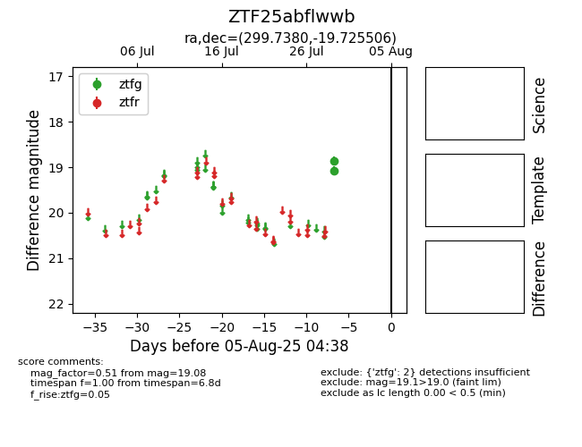

Target ZTF25abflwwb at 2025-08-05 04:38, see:
FINK: fink-portal.org/ZTF25abflwwb
Lasair: lasair-ztf.lsst.ac.uk/objects/ZTF25abflwwb
ALeRCE: alerce.online/object/ZTF25abflwwb
alt names
ZTF25abflwwb (ztf,fink)
coordinates:
equatorial (ra, dec) = (299.7380,-19.72551)
galactic (l, b) = (21.8910,-23.39951)
photometry
last ztfg=19.08
2 ztfg detections
